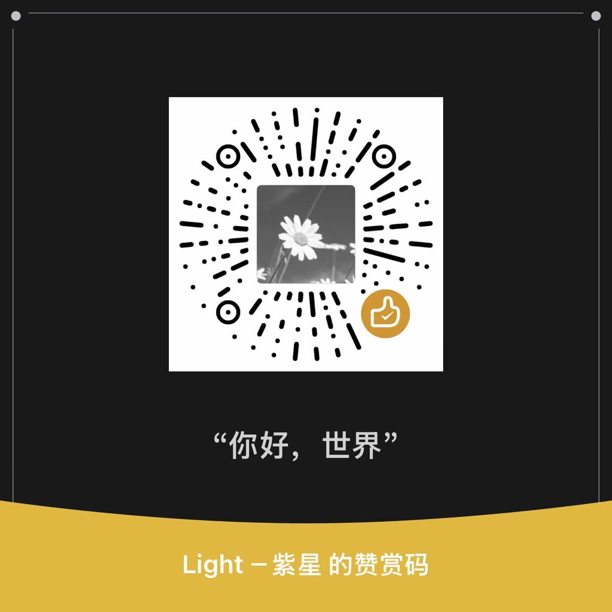

有些欢喜藏在按键声里；多年后再点开，仿佛与年少的自己，隔着屏幕轻轻击掌。
紫星 · flymrp 在线模拟器
在浏览器里，让那些以为留在过去的 MRP 游戏还能再被打开一遍。不必翻箱倒柜找旧手机，也不必向谁解释你为何还记得那个名字。兼容与体验仍在打磨；若有卡顿或闪退，欢迎到项目页留言。
文件留在当前浏览器，不会上传到服务器。界面与 j2me 在线模拟器对齐，方便两边来回使用。
域名与服务器都是实实在在的成本。若你愿意用一杯奶茶的心意，托住这份还在更新的坚持，可以扫下方赞赏码；随心即可，不必勉强。
心意已到，也祝你今日愉快。
